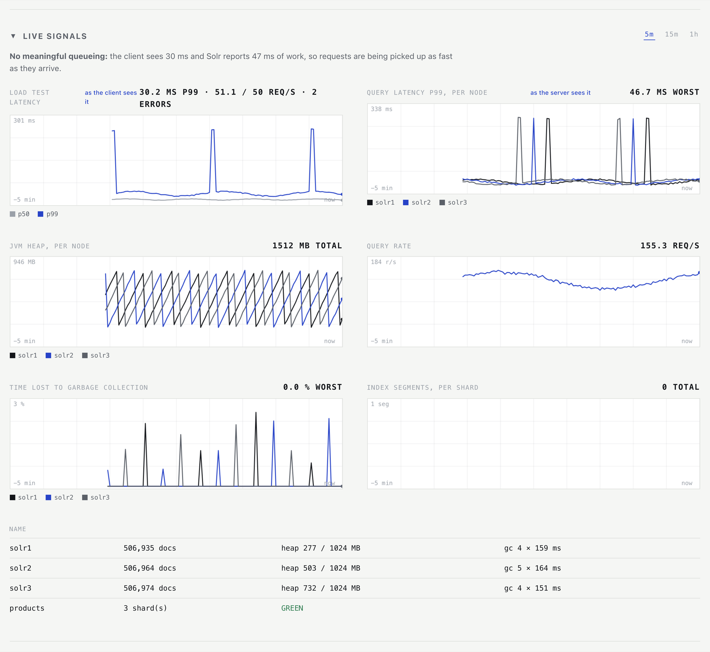
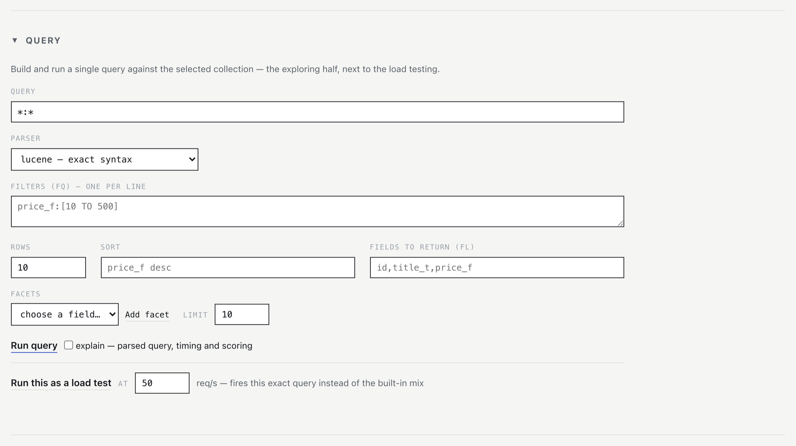

Performance comes from shape, not row count
Set the cardinality, the skew, how long documents run, how vectors cluster. A field with millions of distinct values behaves nothing like a yes/no flag.
Searchlab starts a throwaway SolrCloud, Elasticsearch, or OpenSearch cluster on your laptop, fills it with data you've shaped yourself, and puts honest load on it. Change one setting, run it again, see what moved. It's a workshop, not a benchmark.
pip install searchlab
searchlab quickstart
You'll need Docker and Python 3.10+. That's it, and nothing leaves your machine.
searchlab dashboard
Generate, index, load, measure, compare, dashboard: all of it works the same way on all three. The cluster remembers which engine it is, so you don't have to. Run the same seed and the same workload against two of them, then diff the reports.
A closed-loop tool waits for each response before sending the next request. So when the server slows down, the tool slows down with it. It sends fewer requests at exactly the moment things are going wrong, and the worst latencies never get measured. That's coordinated omission. It's why a run comes back green while people are waiting seconds.
Searchlab is open-loop. Requests go out on a fixed schedule set by your target rate, whatever the server happens to be doing. If it can't keep up, latency climbs and you watch it climb. And if too many requests pile up in flight, they get counted as dropped instead of quietly queued.
All of this works today. Anything you can generate, you can load. Anything you can load, you can measure and compare.
Set the cardinality, the skew, how long documents run, how vectors cluster. A field with millions of distinct values behaves nothing like a yes/no flag.
Try a range of heap sizes, GC flags, versions or engines at once. Every cell gets its own fresh cluster, so nothing leaks from one run into the next.
A lesson asks you to go do something real in another terminal, then waits until it can see the cluster react to it.
See what your text turned into after analysis, where the time actually went, and why the top result beat the others.
Check recall@k against the exact answers, worked out on your own machine, then sweep candidate counts to find where the tradeoff sits.
Give it a real request log and replay it at the original speed, faster, or at a rate you pick. You get the same reports, so you can diff two versions.
One command opens a recorder on your cluster. It refreshes every two seconds and there's nothing else to set up or wire together first. These are real screenshots, not mockups.

The line above the panels is written from the numbers underneath it. Here it says there's no meaningful queueing, because the client sees 30ms against 47ms of work on the server.
Every node gets its own trace, so one sick replica stands out instead of disappearing into an average. Those heap sawtooths are garbage collection, drawn as it happens.
Latency as your client experiences it sits next to latency as the server reports it. The gap between those two numbers is usually the thing you're looking for.

Data generation, query substitution and timing are all seeded. Run the same config twice and you get the same documents and the same schedule. That's the only reason comparing two reports means anything.
Everything is kept in ./.searchlab/,
so once you've run up, every
other command already knows where your cluster is and what it's running.
| Command | What it does |
|---|---|
| doctor | Preflight: docker, compose plugin, ports, disk, leftover state |
| up / down | Render compose and start the cluster; tear it down (--volumes wipes data) |
| status | Live nodes, replica states, collection health |
| create-collection | Collections and indices, with shard and replica counts |
| gen | Generate JSONL documents from a YAML profile, seeded |
| schema | Explicit fields or index mappings derived from the same profile |
| index | Async bulk indexing with --threads and --batch |
| load | Open-loop load test with ramping, mixed read/write, HTML or JSON report |
| replay | Replay real request logs at original, scaled, or fixed pacing |
| recall | recall@k for approximate kNN against locally computed exact ground truth |
| explain | Run a query with debug on and translate the output into English |
| learn | Interactive lessons that run against your live cluster |
| dashboard | Live strip-chart UI: p99, heap, rate, caches, merges (--demo to preview) |
| metrics | Heap, GC, cache hit ratios, merge and commit stats per node |
| metrics-diff | Before/after: GC time burned, cache movement, merges triggered |
| gclog | GC pause percentiles, throughput lost, Full GC detection |
| chaos | Stop, freeze, resume, or restart one node while load is running |
| drill | One YAML: load plus timed node events plus metrics, in a single annotated report |
| sweep | One workload across a config matrix, fresh cluster per cell, comparison table |
| compare | Diff two JSON reports across versions, configs, or engines |
| report-html | Render any JSON report as a dependency-free page with SVG charts |
| k8s | Export the operator manifest that mirrors your running cluster |
| quickstart | Zero to load test in one command: up, collection, gen, index, load |